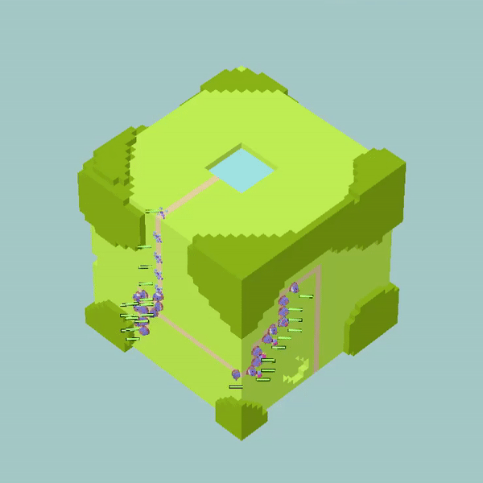
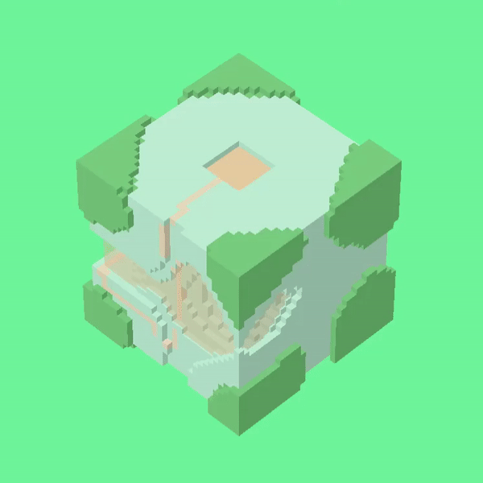
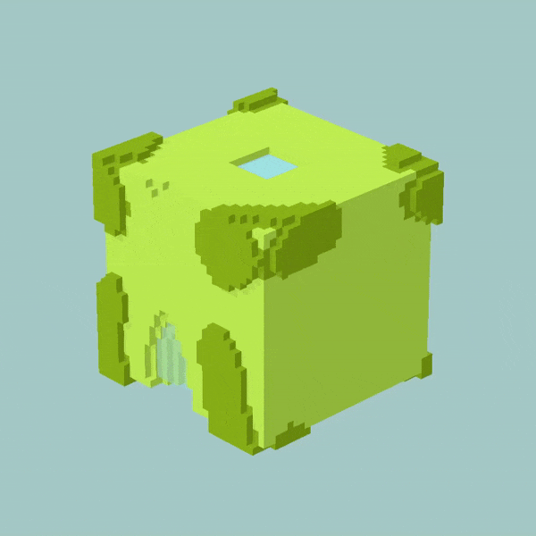

Pond Platoon
Pond Platoon is a casual, 3D tower defense game with a unique twist: players dynamically rotate a procedurally generated voxel world to track enemy movements and defend their base.
- Developed a system to procedurally generate infinite 3D voxel worlds.
- Engineered a custom A* path-finding system tailored for navigating complex 3D terrain.
- Collaborated closely with designers and artists to integrate gameplay mechanics and visual effects.


